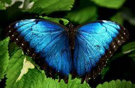

 Butterflies are insects in the macrolepidopteran clade Rhopalocera from the order Lepidoptera, which also includes moths. Adult butterflies have large, often brightly coloured wings, and conspicuous, fluttering flight. The group comprises the large superfamily Papilionoidea, which contains at least one former group, the skippers (formerly the superfamily "Hesperioidea"), and the most recent analyses suggest it also contains the moth-butterflies (formerly the superfamily "Hedyloidea"). Butterfly fossils date to the Paleocene, about 56 million years ago.
Butterflies in their adult stage can live from a week to nearly a year depending on the species. Many species have long larval life stages while others can remain dormant in their pupal or egg stages and thereby survive winters.[33] The Melissa Arctic (Oeneis melissa) overwinters twice as a caterpillar.[34] Butterflies may have one or more broods per year. The number of generations per year varies from temperate to tropical regions with tropical regions showing a trend towards multivoltinism.[35]
 click here to continue..
click here to continue..